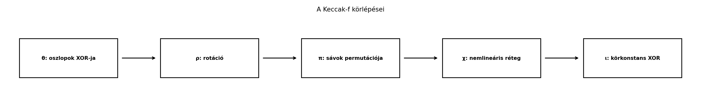

A Merkle–Damgård-szerkezet, a SHA-2 és a hosszkiterjesztés alfejezetben láttuk, hogy a SHA-2 sorozat biztonságosnak tekinthető, de a Merkle–Damgård-felépítés több kellemetlen tulajdonsággal jár. A legfontosabb a hosszkiterjesztéses támadás: ha egy támadó ismer egy lenyomatot, akkor anélkül, hogy ismerné az üzenetet, kiszámíthatja értékét valamilyen utótagra, mert a kimenet a teljes belső állapot, és a függvény iterált. A SHA-2 hibátlan működésű, de ez a szerkezeti tulajdonság olyan protokollhibákhoz vezethet, amelyek nem magából a hash primitívből, hanem a használatból fakadnak.
Emellett a Merkle–Damgård-szerkezet az elmúlt évtizedekben vált egyeduralkodóvá, ami koncentrációs kockázatot jelent: ha egy nap találnának egy hatékony, az összes MD-típusú hash-re alkalmazható támadást, a teljes SHA-2 ökoszisztéma egyszerre kerülne veszélybe. A kriptográfiai tervezésben ezért értékes, ha van legalább két, alapvetően eltérő szerkezetű, szabványos hash-függvényünk.
A 2000-es évek végén a NIST ezért szabványosítási versenyt hirdetett a SHA-3 kiválasztására. A győztes a Keccak nevű család lett, amely merőben más elven, az úgynevezett szivacs (sponge) szerkezeten alapul. Ez az alfejezet ezt a szerkezetet, a Keccak-permutáció lépéseit, a szabványosított SHA-3 és SHAKE függvényeket, valamint a szintén modern BLAKE2 és BLAKE3 tervezést mutatja be.
A szivacs egy véges, bites belső állapotot tart fenn, és egy permutációt alkalmaz ismételten. Az állapotot két részre osztjuk:
Teljesül, hogy . A SHA-3 esetében bit, a rate és a capacity a konkrét függvénytől függ.
A hash-számítás két fázisból áll:
Definíció. A
,
,
paraméterű,
permutációval adott szivacs-hash a fenti két fázis szerint működik; a
padding a SHA-3 családban a Pad101 szabályt követi: az üzenet
végéhez egy
bit, majd annyi
bit, amennyi szükséges, végül egy
bit kerül. A SHA-3 az üzenet után a 01, a SHAKE az
1111 tartományelválasztó biteket fűzi, és csak ezután jön a
Pad101. Bájtos implementációban (a Keccak a bájton belül a
legkisebb helyiértékű bittel kezd) ez összevontan 0x06
(SHA-3), illetve 0x1F (SHAKE) bájtot jelent az üzenet után,
a rate-blokk utolsó bájtjába pedig 0x80 kerül (ha ugyanaz a
bájt, akkor 0x86, illetve 0x9F).
A szivacs legfontosabb biztonsági állítása a következő: ha ideális permutációként viselkedik, akkor a támadónak az ütközés megtalálásához körülbelül permutáció-kiértékelést kell elvégeznie, preimage-támadáshoz pedig a kimenethossz és a közül a kisebbet (azaz a költség ). Ezért a capacityt tekintjük a biztonsági szint fő paraméterének; a kimeneti hossz soha nem viheti a biztonságot a születésnapi korlát fölé. A SHA3-256 esetén például , ezért a kapacitásból adódó ütközési korlát lenne, de a 256 bites kimenet miatt a tényleges ütközési ellenállás a születésnapi támadás miatt szinten marad. A preimage-ellenállás ott , mert éppen a kimenethosszal egyezik.
Miért immunis a hosszkiterjesztésre? A Merkle–Damgård-szerkezetnél a kimenet a teljes belső állapot, ezért a támadó egyszerűen folytathatja a számítást. A szivacsnál a kimenet csak a rate részből származik, a capacity soha nem kerül kifelé. A támadó a kimenetből legfeljebb bitet ismer a bites állapotból; a hiányzó bit megakadályozza, hogy a belső állapotot rekonstruálja, így a hosszkiterjesztés nem működik. Az első kimeneti blokk ugyan az abszorpció utolsó állapotának rate-része, de a bites capacity nélkül ebből az állapot nem folytatható.
A szemléltetéshez nem a valódi, 1600 bites Keccak-f-et használjuk, hanem egy oktatási mini-szivacsot. Legyen
és a permutáció legyen
ahol 8 bites ciklikus balra forgatást jelent, a binárisan . A rate a felső 4 bit, a capacity az alsó 4 bit. Üzenetünk legyen (binárisan ), padding nélkül két 4 bites blokkra bontva: , .
Abszorpció:
Kipréselés:
A kimenet tehát első 8 bitben, illetve 12 bitben. Figyeljük meg, hogy a capacity alsó 4 bitje (, , ) soha nem került a kimenetbe, de hatással volt minden későbbi blokkra.
A SHA-3 szabványban a bites állapotot darab, egyenként 64 bites sávra (lane) osztjuk. A Keccak-f 24 körből áll, minden kör öt lépést hajt végre: θ, ρ, π, χ, ι.

A lépések szerepe:
A Keccak-f tervezése az úgynevezett széles nyomvonal stratégiát követi: a lineáris lépések gyors diffúziót adnak, a χ pedig erős nemlinearitást; a 24 kör elegendő biztonsági tartalékot biztosít.
A NIST FIPS 202 szabvány (ellenőrizendő, hogy a jelenlegi változatot idézem) négy fix kimenetű SHA-3 függvényt és két változó kimenetű SHAKE függvényt definiál. Mindegyik bites állapottal dolgozik, a rate és capacity a kimenet hosszától függ:
| Függvény | Kimeneti hossz | Rate | Capacity |
|---|---|---|---|
| SHA3-224 | 224 bit | 1152 bit | 448 bit |
| SHA3-256 | 256 bit | 1088 bit | 512 bit |
| SHA3-384 | 384 bit | 832 bit | 768 bit |
| SHA3-512 | 512 bit | 576 bit | 1024 bit |
| SHAKE128 | tetszőleges | 1344 bit | 256 bit |
| SHAKE256 | tetszőleges | 1088 bit | 512 bit |
A SHAKE függvények úgynevezett XOF-ok (extendable-output function, változó kimenethosszúságú függvény). Egy XOF nem egy rögzített hosszú lenyomatot ad, hanem tetszőleges hosszúságú, pszeudovéletlen bájtfolyamot. Ezért a SHAKE128 biztonsági szintje a választott kimenethossztól is függ: a kapacitásból 128 bites ütközési ellenállás adódik (c/2), de a preimage-ellenállás a kimenet hosszával nő, legfeljebb bitig. Ha valaki csak 64 bitet kér a SHAKE128-ból, akkor a preimage-keresés művelet lehet, ezért az ilyen rövid kimeneteket csak megfelelően erős forrásból származó értékekkel szabad használni.
A SHAKE128/256 használata kulcsszármaztatásra, illetve olyan helyeken is előnyös, ahol a hash hosszát a protokoll nem tudja előre rögzíteni. A gyakorlatban a NIST az SP 800-185-ben további származtatott módokat is megadott (cSHAKE, KMAC, TupleHash stb.).
Továbbvitt eredmény. A szivacs és az XOF fogalmát használjuk a Hash-alapú aláírások: Lamport, Merkle, XMSS, SLH-DSA alfejezetben, ahol az SLH-DSA a SHAKE256-ot hash- és PRF-függvényként használja. A SHAKE128/256 a rácsalapú posztkvantum sémákban (Learning With Errors és strukturált változatai) belső hash- és pszeudovéletlen-generátorként jelenik meg, különösen a ML-KEM (Kyber) és a ML-DSA (Dilithium) és a Falcon alfejezetekben.
A BLAKE2 a SHA-3 verseny egyik döntőséből, a BLAKE-ból fejlődött ki, de tervezésében sokkal közelebb áll a ChaCha folyamrejtjelhez, mint a Keccakhoz. A BLAKE2 közvetlenül a hash-be építi a só (salt), a személyre szabás (personalization) és a kulcs támogatását, így elkerülhető a hibás HMAC-összeállítás. A BLAKE2 két fő változata:
A BLAKE2 szerkezete a Merkle–Damgård egy továbbfejlesztett változata, az úgynevezett HAIFA, amely a kompressziós függvénynek átadja a blokk sorszámát és egy flaget, így a hosszkiterjesztéses támadás itt sem alkalmazható. A sávok, a rotációk és a nemlineáris módosítások a ChaCha negyedköréhez hasonlítanak.
A BLAKE3 a BLAKE2 továbbfejlesztése, amely
fa-szerkezetű (Merkle-fa) üzenetfeldolgozást használ. Ennek előnye a
nagyfokú párhuzamosság: a nagy üzenetek blokkjait egymástól függetlenül
lehet feldolgozni, majd a részeredményeket kombinálni. A BLAKE3
váltakozó kimenethosszúságú, gyakorlatilag XOF-ként is működik, és 256
bites alapértelmezett kimenettel rendelkezik. A BLAKE3-nak három módja
van: egyszerű hash, kulcsolt hash (32 bájtos kulccsal, MAC-ként) és
kulcsszármaztató mód kontextus-karakterlánccal; a BLAKE2
salt/person mezői helyett ez utóbbi adja a
tartományelválasztást (a pontos API-t a BLAKE3-specifikációból
ellenőrizd). A Python a hashlib modulban a BLAKE2b-t és
BLAKE2s-t közvetlenül elérhető; a BLAKE3-hoz külső könyvtár
szükséges.
hashlib modulbólimport hashlib
m = b"sponge"
# SHA3-256: fix 32 bájt kimenet
h = hashlib.sha3_256(m)
print("SHA3-256:", h.digest_size, "bájt")
# SHAKE256: XOF, tetszőleges hosszú kimenet
s = hashlib.shake_256(m)
print("SHAKE256 64 bájt:", len(s.digest(64)), "bájt")
# BLAKE2b: kimenet mérete választható
b = hashlib.blake2b(m, digest_size=32)
print("BLAKE2b-256:", b.digest_size, "bájt")A várt kimenet:
SHA3-256: 32 bájt
SHAKE256 64 bájt: 64 bájt
BLAKE2b-256: 32 bájtA kód csak a hosszakat jeleníti meg, mert a konkrét lenyomat értékét
a hexdigest() hívással lehetne kiíratni, de az a
Python-verziótól függetlenül determinisztikus lenne; itt a szerkezeti
különbségek (fix hossz, XOF, választható hossz) a lényegesek. A
hashlib.shake_256 esetén a digest() hívásnak
kötelező argumentuma a kimeneti hossz; ha elhagyjuk, a Python hibát ad,
mert nem tudja, hány bájtot kérünk.
A SHA-3 kiválasztását a NIST 2007-ben indította el, miután a SHA-1 elleni támadások felgyorsultak, és a kriptográfiai közösség szerette volna csökkenteni a SHA-2 egyeduralmából fakadó kockázatot. A versenybe 64 jelölt érkezett, a második fordulóba 14, a döntőbe pedig öt (BLAKE, Grøstl, JH, Keccak, Skein) jutott. A győztes a Keccak lett, amelyet a NIST 2012-ben jelentett be, és azóta a FIPS 202 szabvány rögzíti. (Az évszámok és a résztvevők száma a nyilvános versenydokumentumokból ismert, de a tananyag nem végez friss ellenőrzést.)
A SHA-3 gyakorlati szerepe ma leginkább tartalék jellegű: a SHA-2 továbbra is biztonságosnak tekinthető, és a teljesítménye sok szoftveres környezetben jobb, mint a SHA-3-é. A SHA-3 azonban más szerkezetű, ezért ha a jövőben egy új támadás a Merkle–Damgård-elv ellen irányulna, a SHA-3 akkor is ellenállhat. A SHAKE128/256-ot viszont aktívan használják a posztkvantum szabványosításban, például a ML-KEM és ML-DSA belső pszeudovéletlen-generátoraként.
A BLAKE2-t számos valós rendszerben választották a SHA-2 helyett a sebessége és a beépített só miatt. A WireGuard a BLAKE2s-t használja a Noise-protokoll részeként, mert a 32 bites változat jól illeszkedik a VPN-csomagküldéshez. A BLAKE2b-t a Linux kernel egyes ellenőrzőösszeg-feladataiban, illetve több fájlformátumban is alkalmazzák. (Az egyes felhasználási helyek pontos verzióit a jelenlegi forrásokból érdemes megerősíteni.)
A BLAKE3-at nagy áteresztőképességű rendszerekben használják, ahol a fa-szerkezet párhuzamossága kihasználható. A gyakorlatban a BLAKE3 kimenetét gyakran 256 bitre vágják, de ha egy protokoll XOF-ot kíván, a változó hosszúságú kimenet is elérhető.
SHAKE használata fix hosszúságú hash-ként, a kimeneti
hossz egyeztetése nélkül. Ha az egyik fél 32 bájtot, a másik 64
bájtot kér a SHAKE-ből, akkor a kapott értékek különböznek, és a
protokoll félreértelmezheti őket. Mindig rögzíteni kell a kimeneti
hosszt a protokoll specifikációjában, és mindkét oldalon ugyanazt a
digest(n) hosszt használni.
A capacity és a rate önkényes megváltoztatása. A szivacs paramétereit nem szabad „kisebb capacity, nagyobb sebesség” alapon módosítani. A capacity fele adja az ütközési ellenállást bitben, ezért a értékű SHAKE128 csak 128 bites ütközési szintet garantál. Ha valaki egyedi szivacsot épít, ragaszkodnia kell a szabványos paraméterekhez, és jeleznie kell, hogy a konstrukció nem auditált.
A konkrét SHA-3 lenyomat hosszának összekeverése a SHAKE
kimeneti hosszával. A hashlib.sha3_256(m) mindig
32 bájtot ad, míg a hashlib.shake_256(m).digest(32) szintén
32 bájtot, de a kettő nem ugyanaz a függvény, és más paddingot használ.
A domain separation bájt megváltoztatja a teljes kimenetet, ezért a két
konstrukciót még azonos kimeneti hossz esetén sem szabad
felcserélni.
A BLAKE2 só és személyre szabás elhagyása olyan környezetben, ahol domain separation kell. A BLAKE2 beépített sója ellenállóvá teszi az előre kiszámított (szivárványtáblás) támadásokkal szemben, de ha egy alkalmazásnak egy adott célhoz tartozó, egyedi hash-t kell előállítania, akkor a személyre szabást is meg kell adni. A kulcsos BLAKE2 használatakor a kulcs hosszát és a résztvevők szerinti elválasztást is dokumentálni kell.
A Keccak-f közvetlen használata padding nélkül. A Keccak egy permutáció, nem hash-függvény. Ha valaki a nyers permutációt használja hash-ként, semmilyen hossz- és domain-elválasztási garanciát nem kap. Mindig a szabványos konstrukciót (SHA-3, SHAKE, cSHAKE) kell használni.
1. feladat (A). A fenti 8 bites mini-szivacssal (, , ) számítsd ki a üzenet hash-ének első két 4 bites kimeneti blokkját, ha padding nélkül, két teljes blokkot használsz.
2. feladat (A). Add meg a SHA3-512 esetén a rate és a capacity értékét, valamint a várt ütközési és preimage-ellenállást bitben.
3. feladat (B). A SHA-2 esetében a hosszkiterjesztés azért működik, mert ismeretében a támadó a belső állapotot ismeri. Tervezz egy egyszerű protokollt, amely SHA-2 használata mellett is kivédi ezt a támadást, például HMAC alkalmazásával vagy a hossz explicit bekötésével. Röviden indokold, miért védett a konstrukciód.
4. feladat (B). Írj Python kódot, amely a
hashlib.shake_128-ból 10, 20 és 30 bájtot kér, és
ellenőrzi, hogy a rövidebb kimenet a hosszabb kimenet prefixe. Miért
viselkedik így a kimenet?
5. feladat (C). Magyarázd el, hogy a szivacs ideális permutáció modelljében miért lesz az ütközési ellenállás körülbelül bit, ha a kapacitás bit, és miért nem növelhető ez a kimenet hosszának növelésével.
6. feladat (D). A fenti 8 bites mini-szivacson paraméterrel keress a üzenethez ütközést, vagyis egy másik 8 bites üzenetet (padding nélkül), amelynek az első kimeneti blokkja ugyanaz, mint a példában kapott . Használhatsz brute force-ot Pythonban.
Az üzenet , blokkokra bontva , .
Első kimeneti blokk: az felső 4 bitje .
A kimenet tehát .
SHA3-512 esetén bit, bit. Az ütközési ellenállás a 512 bites kimenet miatt ; a preimage-ellenállás .
Egy lehetséges megoldás a kettős hash: , ahol a titkos kulcs. A támadó csak -t látja; a belső érték (és így a lánc állapota) rejtve marad, ezért a belső hash nem folytatható, a külső hash folytatása pedig -et adna, ami nem érvényes címke egyetlen üzenetre sem. Szabványos és bizonyítottan biztonságos megoldás a HMAC (A HMAC), amely a kulcsot a belső és a külső hívásba is bekeveri.
import hashlib
m = b"sponge"
out10 = hashlib.shake_128(m).digest(10)
out20 = hashlib.shake_128(m).digest(20)
out30 = hashlib.shake_128(m).digest(30)
print(out20.startswith(out10)) # True
print(out30.startswith(out20)) # True
print(out30.startswith(out10)) # TrueA kimenet prefix tulajdonságú, mert a SHAKE XOF ugyanazt a belső állapotot préseli ki; a kívánt hossz csak a kivett bájtok számát szabályozza, az első bájtokat nem befolyásolja.
Ha ideális permutáció, akkor a szivacs belső állapota a támadó számára ismeretlen capacity résszel rendelkezik. Az ütközéshez a támadónak két olyan bemenetet kell találnia, amelyek az abszorpció után ugyanazt a belső állapotot vagy legalább azonos kimeneti rate részét eredményezik. A capacity bit, ezért a belső állapot ezen részéből lehetőség van. Az ütközéshez a születésnapi paradoxon szerint körülbelül próbálkozás kell. A kimenet hosszának növelése nem növeli ezt a korlátot: ha két üzenetre a bites capacity-rész egyezik (születésnapi érvvel kb. próbálkozás), akkor a következő blokkot úgy választjuk, hogy a rate-rész különbségét kioltsa (), és a két állapot teljesen azonos lesz; innen minden kipréselt bit egyezik, bármilyen hosszú a kimenet. Fordítva, a kimenet bitje miatt az ütközési ellenállás nem lehet nagyobb, mint . Ezért a tényleges ellenállás bit.
A példában a üzenet első kimeneti blokkja volt. Brute force-szal végigpróbáljuk az összes 8 bites üzenetet, és ellenőrizzük az első kimeneti blokkot.
def rotl8(x, k):
return ((x << k) | (x >> (8 - k))) & 0xFF
def f(x):
return rotl8(x, 1) ^ 0xA5
def sponge_hash(m):
# m 0..255, két 4 bites blokk, padding nélkül
m0 = (m >> 4) & 0xF
m1 = m & 0xF
S = m0 << 4 # 0x00 XOR (m0 || 0000)
S = f(S) # permutáció
S = S ^ (m1 << 4) # a második blokk XOR-ja a rate-be (nem felülírás!)
S = f(S) # permutáció
return (S >> 4) & 0xF # első kimeneti blokk
target = sponge_hash(0x1A)
for candidate in range(256):
if candidate != 0x1A and sponge_hash(candidate) == target:
print(hex(candidate), hex(target))
break
else:
print("Nincs ütközés 8 bites tartományban")A kimenet: 0x0 0xe (Python 3.14.4-gyel futtatva) – a
0x00 üzenet első kimeneti blokkja is
.
Összesen 31 másik 8 bites üzenet ad ugyanilyen első kimeneti blokkot
(pl. az 1. feladat
üzenete is, amely ugyanabba a
állapotba visz); a 4 bites kimenetnél ez várható, hiszen csak 16
lehetséges érték van.
A szivacs egy
bites állapoton és egy
permutáción alapuló hash-szerkezet. Az állapot rate
()
és capacity
()
részből áll; az üzenetblokkokat az abszorpció során a rate-be XOR-oljuk,
majd
-et
alkalmazunk, a kimenetet pedig a kipréselés során a rate-ből olvassuk
ki. A capacity rejtve marad, ezért a hosszkiterjesztéses támadás nem
működik, és az ideális permutáció modellben az ütközési ellenállás
bit, a preimage-ellenállás
bit. A Keccak-f 1600 bites állapoton, 24 körben alkalmazza a θ, ρ, π, χ,
ι lépéseket. A SHA-3 fix kimenetű függvényeket, a SHAKE128/256 XOF-okat
ad. A BLAKE2 a ChaCha-körökkel rokon, sóval és személyre szabással
bővített HAIFA hash; a BLAKE3 fa-szerkezete párhuzamosságot biztosít. A
SHA-3 a SHA-2 tartalék alternatívája; a SHAKE-ot a posztkvantum sémák
belső hash-eként használjuk, a szivacs és XOF fogalmát pedig a
hash-alapú aláírásoknál. A gyakorlatban mindig a szabványos függvényeket
és a hashlib magas szintű API-ját használjuk, soha nem a
nyers Keccak-permutációt.
A fejezet a NIST FIPS 202 (SHA-3/SHAKE) és a SHA-3 verseny nyilvános dokumentációjának ismeretére épül; a benne szereplő paraméterek (rate, capacity, padding) a szabvány szerintiek, de a szabvány pontos változatát és az idézett bekezdéseket nem ellenőriztem friss forrásból. A BLAKE2 leírása az RFC 7693 alapján történt; a BLAKE3 specifikációja nem RFC, ezért a fa-szerkezet pontos részleteit a hivatalos BLAKE3 dokumentációból érdemes megerősíteni. A valós alkalmazásoknál említett WireGuard-használat a Noise-protokoll ismert konvenciója, de a pontos implementációs részletek verziófüggők lehetnek.